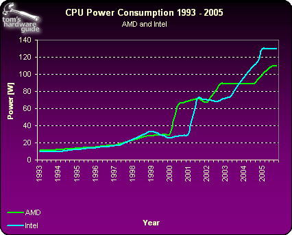

What is TDP ???
Thermal Design Power (TDP) is a metric that is expressed in watts. It refers to the amount of power/heat a cooling system (i.e. heatsink, fan) is expected to dissipate to prevent overheating. The TDP does not typically indicate the most power the chip could ever draw, but how much it draws under real load. You can, generally, use TDP to gauge power consumption of a chip, in that the smaller the number for TDP, the lower power consumption by the CPU.

As stated above, the various parts can have vastly different TDPs. Perhaps the most common example is the difference between a modern ARM processor designed for smartphones and a desktop processor designed for home and office PCs.
The Snapdragon processors found in so many of today’s smartphones have stated TDPs of .5 to 1 watt, while a Core i5-2500 has a TDP of 95 watts. That’s a massive difference, and representative of the difference in each part’s power consumption and performance.